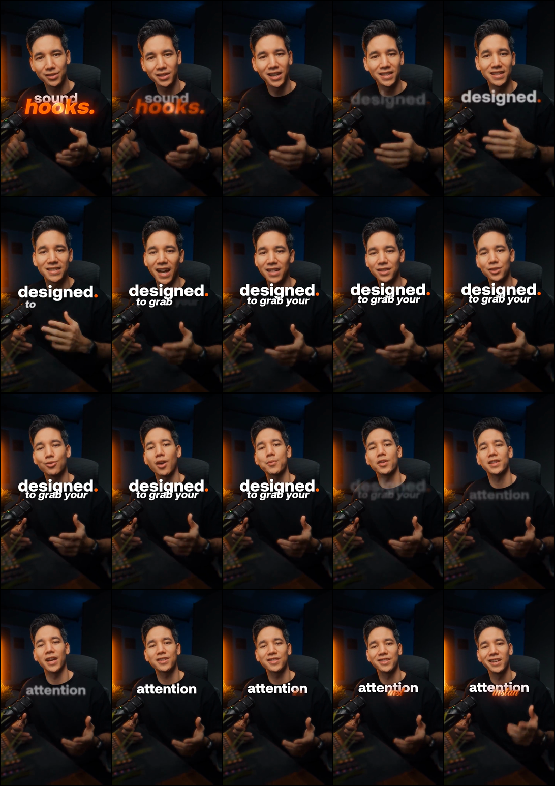
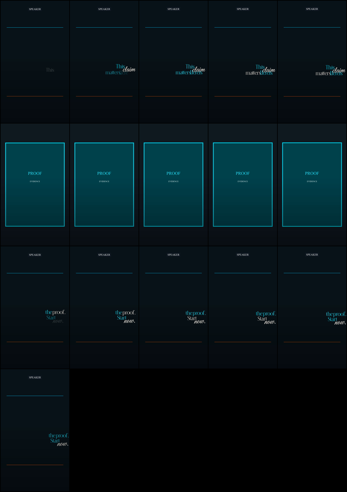
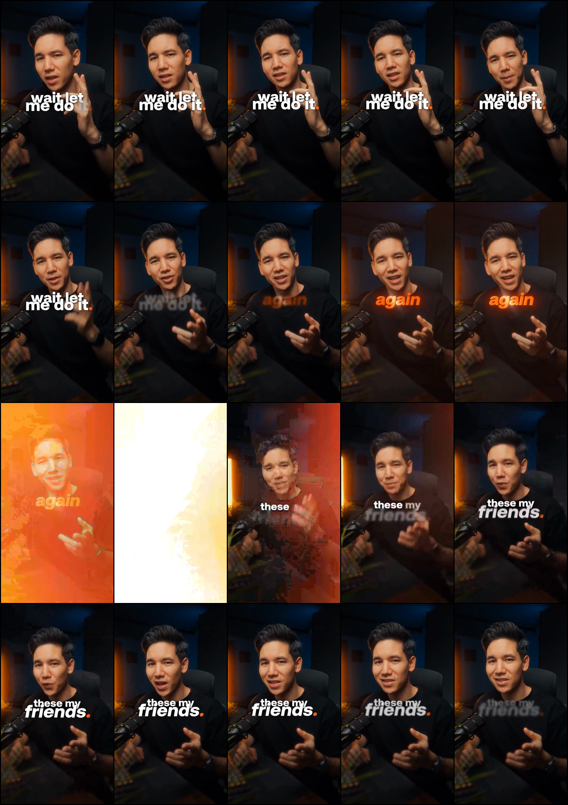
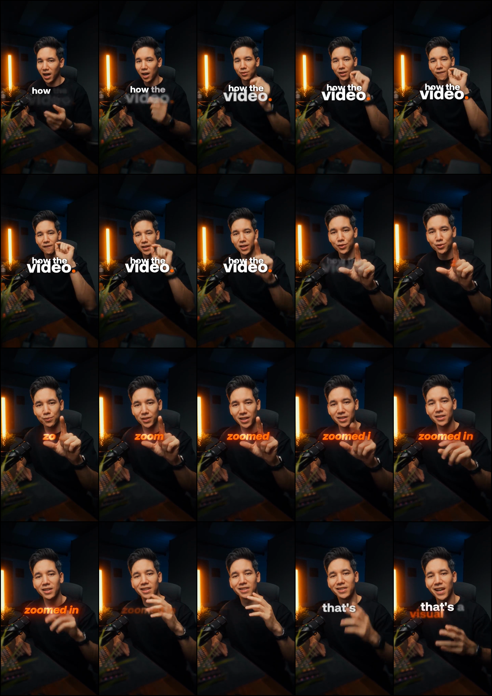

Frame evidence, not a style impression. The reference is 18.65s at 25fps; each detail sheet advances in 100ms steps.

Observed: phrase hierarchy, word builds, script hinges, blur exits, semantic color, and deliberate motion changes.

Observed: valid phrase reveal and mode switching, but no real speaker composition, no reference cadence, and no depth staging.

